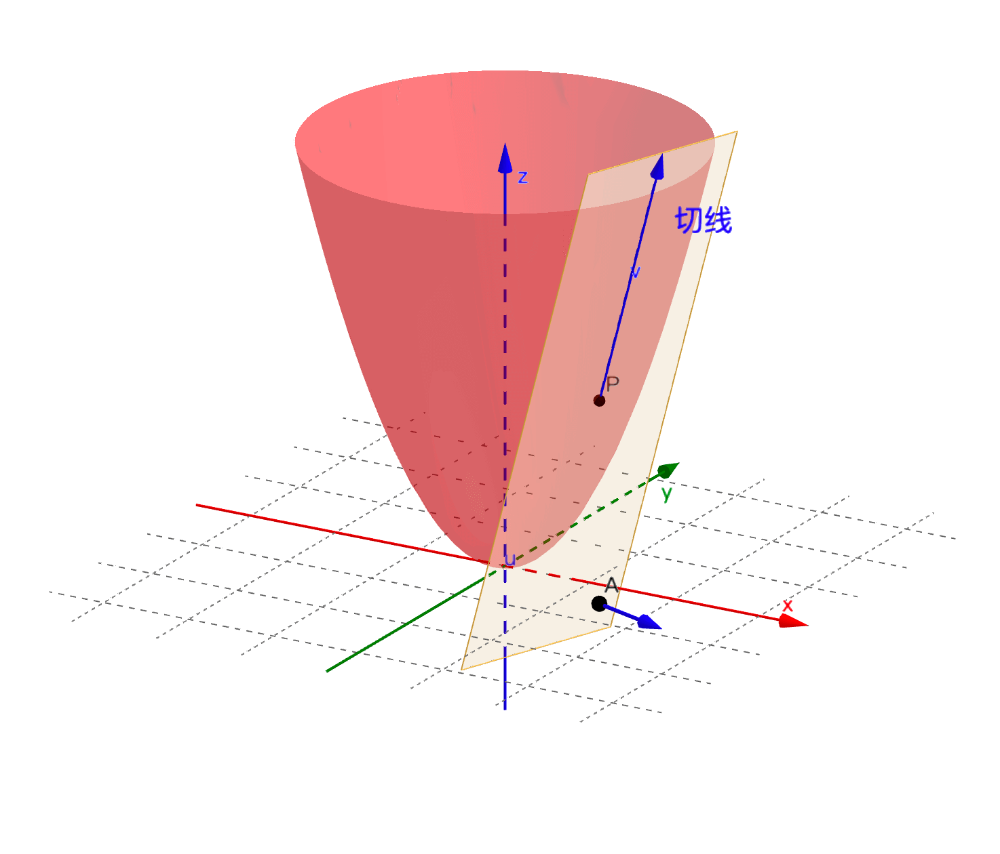
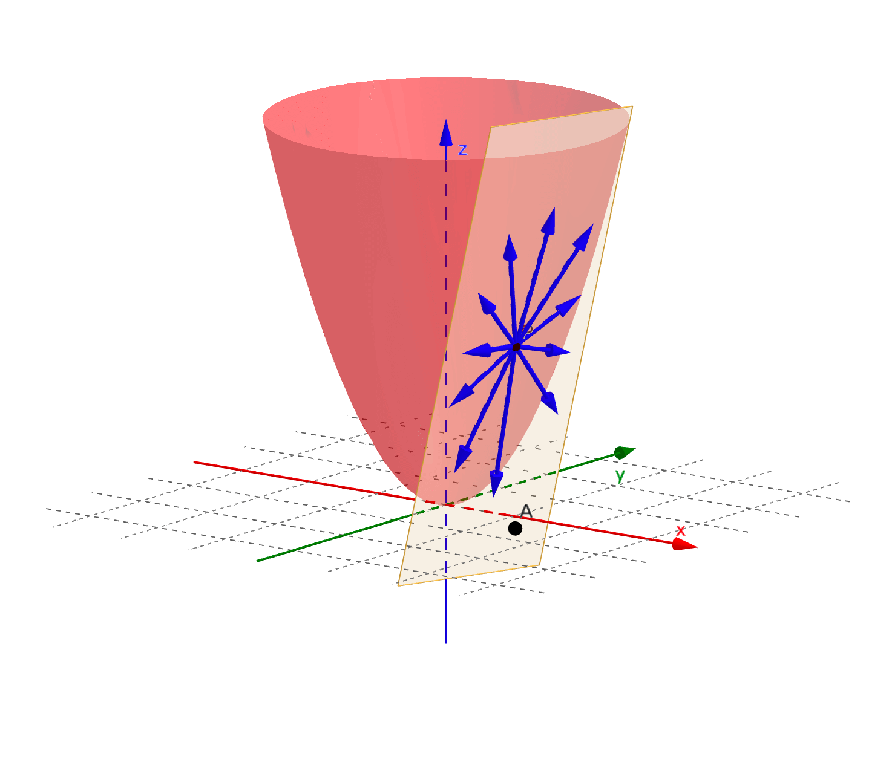
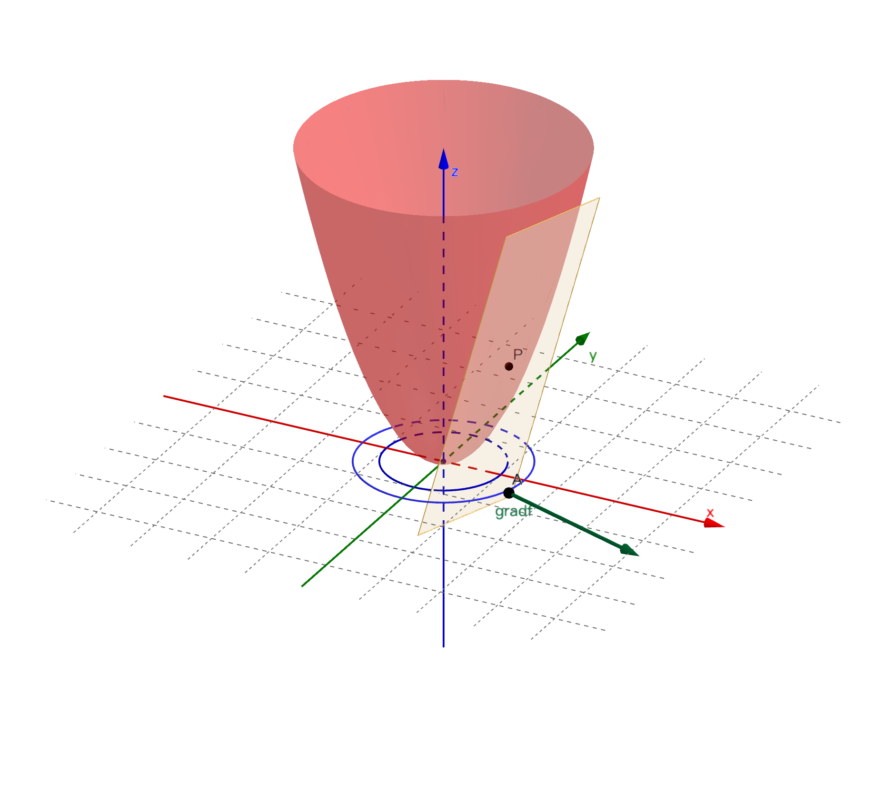
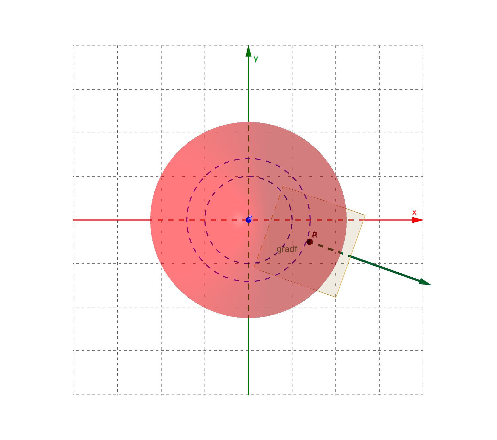
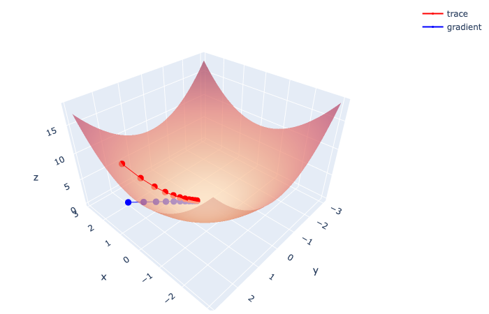

梯度下降法
机器学习深度学习中用梯度下降法来优化损失函数，试图求解损失函数的最小值以及其对应的参数。要搞清楚梯度下降法，我们从方向导数的概念引入。
方向导数
方向导数就是曲面切线的斜率。曲面的切线不是唯一的， 各个方向都有，所以不同方向的切线斜率也不一定相同，方向导数也不是唯一的。
例如二元函数 的方向导数如图所示：

函数 在 点沿着切线 方向的方向导数为： 其中 。把该极限记作方向导数 。其计算公式为： 其中 为x轴正方向到 的角度。
梯度
梯度是个向量，它的模为曲面上该点取值最大的方向导数的值，方向为最大方向导数对应的切线的投影方向。也是该点所处的等高线的法向量，也就是函数值变化最快的方向。
[!NOTE] 梯度的方向并不是最大方向导数对应的切线方向，而是切线的投影方向。但即使认为是切线方向，对理解梯度的概念也不会产生太大的影响。
图中绿色箭头所示向量即为梯度：

对于二元函数 ，其曲面上任意点 的梯度，记作 或 ，定义为： 仍然以二元函数 为例。设 为曲面某点切线 方向导数所对应方向的单位向量，则该方向导数为： 其中， 为 和 的夹角。当 时，方向导数 有最大值，为梯度的模 ，且此时 的方向和梯度 的方向保持一致。
梯度下降法
为求解函数的最小值以及最小值对应的坐标，数学上通常要么有直接的求解公式。要么就对函数进行求导，令导函数等于0进行求解。但面对机器学习这类场景，往往数据量大、维度高导致计算量过大，或者目标函数复杂本身无法获得解析解。机器学习场景下，往往利用梯度下降这类迭代优化算法快速逼近目标函数的最小值以获得最优化的参数值。
梯度下降法的作用不仅仅是求解函数最小值，在机器学习深度学习算法中，更重要的是获取函数最小值（尽可能小）时对应的坐标，即最优化的函数参数值。
梯度下降法的原理是：试图通过迭代的方式，每步都沿着函数数值下降最快的方向（也就是负梯度方向）走一小步。每走一步都重新确认一下负梯度方向，然后再沿着该方向下降，直到找到函数最小值以及对应的位置。
[!NOTE]
之所以每步都沿着负梯度方向走有两个原因：
- 负梯度方向一定是会让函数值变小（至少不变大）的方向。需要注意：走出了这一步不意味着函数值就一定会变小，也有可能步子迈大了，函数值反而有所变大。
- 负梯度是函数值下降最快的方向，便于更快速的找到最小值。其实，即使每步不是沿着负梯度方向，只要是沿着一个函数值变小的方向，最终也是能找到函数的最小值的。
代码实现梯度下降
仍然以二元函数 为例，写代码实现梯度下降法求解函数最小值。代码其实很简单，关键需要自己手动把函数梯度先求出来。10次迭代之后可以看到已经很接近函数的最小值了。如果再多迭代几次就肯定能达到最小值。
# 原函数f(x,y)
def f(x,y):
return x ** 2 + y ** 2
# f(x,y)对x的偏导
def fx(x):
return 2 * x
# f(x,y)对y的偏导
def fy(y):
return 2 * y
# 设置梯度下降起始点
x=2; y=2
# 设置梯度下降步长
step = 0.1
# 循环迭代进行梯度下降
for i in range(10): # 设置梯度下降迭代次数为10
before = f(x, y) # 梯度下降开始前，起始坐标下的函数值
x = x - step * fx(x) # x轴方向进行梯度下降，获得新的x坐标
y = y - step * fy(y) # y轴方向进行梯度下降，获得新的y坐标
after = f(x, y) # 基于新坐标的函数值
theta = before - after # 完成一次梯度下降迭代，前后函数值的差
print("before:{:.2f}, after:{:.2f}, theta:{:.2f}, x:{:.2f}, y:{:.2f}".format(before, after, theta, x, y)) # 输出结果并保留2为小数
before:8.00, after:5.12, theta:2.88, x:1.60, y:1.60
before:5.12, after:3.28, theta:1.84, x:1.28, y:1.28
before:3.28, after:2.10, theta:1.18, x:1.02, y:1.02
before:2.10, after:1.34, theta:0.75, x:0.82, y:0.82
before:1.34, after:0.86, theta:0.48, x:0.66, y:0.66
before:0.86, after:0.55, theta:0.31, x:0.52, y:0.52
before:0.55, after:0.35, theta:0.20, x:0.42, y:0.42
before:0.35, after:0.23, theta:0.13, x:0.34, y:0.34
before:0.23, after:0.14, theta:0.08, x:0.27, y:0.27
before:0.14, after:0.09, theta:0.05, x:0.21, y:0.21
实验：用方向导数替代梯度下降
假设用方向导数来替代梯度，可以看到其实也可以起到下降的效果，只是速度要慢一些，10次迭代后离最小值还有点距离。在真实的大数据应用场景中，速度是需要考虑的非常重要的点。梯度不仅下降快，求梯度也比求方向导数更加容易。
import math
# 设置梯度下降起始点
x=2; y=2
# 设置梯度下降步长
step = 0.1
for i in range(10): # 设置迭代次数为10
before = f(x, y) # 开始前，起始坐标下的函数值
x = x - step * fx(x) * math.cos(math.pi/3) # 沿着切线投影与x成60度角的方向导数进行下降
y = y - step * fy(y) * math.sin(math.pi/3) # 沿着切线投影与y成60度角的方向导数进行下降
after = f(x, y) # 完成后，基于新坐标的函数值
theta = before - after # 完成一次迭代，前后函数值的差
print("before:{:.2f}, after:{:.2f}, theta:{:.2f}, x:{:.2f}, y:{:.2f}".format(before, after, theta, x, y)) # 输出结果并保留2为小数
before:8.00, after:5.97, theta:2.03, x:1.80, y:1.65
before:5.97, after:4.49, theta:1.48, x:1.62, y:1.37
before:4.49, after:3.40, theta:1.09, x:1.46, y:1.13
before:3.40, after:2.60, theta:0.81, x:1.31, y:0.93
before:2.60, after:1.99, theta:0.60, x:1.18, y:0.77
before:1.99, after:1.54, theta:0.45, x:1.06, y:0.64
before:1.54, after:1.19, theta:0.34, x:0.96, y:0.53
before:1.19, after:0.93, theta:0.26, x:0.86, y:0.44
before:0.93, after:0.73, theta:0.20, x:0.77, y:0.36
before:0.73, after:0.58, theta:0.16, x:0.70, y:0.30
画图展示梯度下降
采用plotly进行作图。之所以不用matplot，是因为matplot不太好实现surface和scatter在同一张图里展示。如图所见，红色线表示梯度下降迭代过程，逐渐逼近函数曲面最小值，每个小红点代表一次迭代。而蓝色线处于xy平面上，每一个小蓝点才是真正每一步迭代的梯度。
# 设置梯度下降起始点
x=2; y=2
# 设置梯度下降步长
step = 0.1
pos_x = []
pos_y = []
pos_z = []
# 循环迭代进行梯度下降
for i in range(10): # 设置梯度下降迭代次数为10
before = f(x, y) # 梯度下降开始前，起始坐标下的函数值
pos_x.append(x)
pos_y.append(y)
pos_z.append(before)
x = x - step * fx(x) # x轴方向进行梯度下降，获得新的x坐标
y = y - step * fy(y) # y轴方向进行梯度下降，获得新的y坐标
after = f(x, y) # 基于新坐标的函数值
pos_x.append(x)
pos_y.append(y)
pos_z.append(after)
from plotly.offline import init_notebook_mode, iplot
import plotly.graph_objects as go
import numpy as np
# 画二元函数曲面
xx = np.arange(-3,3,0.1)
yy = np.arange(-3,3,0.1)
X, Y = np.meshgrid(xx, yy)
Z = X ** 2 +Y ** 2
trace_surface= go.Surface(x=X, y=Y, z=Z, colorscale='redor', showscale=False, opacity=0.7)
# 画红色trace线
trace_scatter3d = go.Scatter3d(x=pos_x, y=pos_y, z=pos_z, mode='lines+markers',
marker=dict(color='red', size=3), name = 'trace')
# 画蓝色gradient线
trace_gradient = go.Scatter3d(x=pos_x, y=pos_y, z=np.zeros(len(pos_x)), mode='lines+markers',
marker=dict(color='blue', size=3), name = 'gradient')
data=[trace_surface, trace_scatter3d, trace_gradient]
# 图片布局调整
layout = go.Layout(scene = dict(aspectratio = dict(x=1.5, y=1.5, z=1)),
margin=dict(l=5, r=5, t=5, b=5), width=700)
fig = dict(data = data, layout = layout)
iplot(fig)

PyTorch自动求导autograd
在前面的代码中最关键的点在于需要实现手动将函数的梯度公式计算出来，代码只是将具体的数值带入梯度公式计算。而PyTorch作为市面上最流行的机器学习深度学习框架，它的核心魔法就在于自动求导：autograd。
将上面手写的梯度下降代码中梯度计算的部分用PyTorch的autograd进行替换，如下所示。可以看到，代码只给出了原函数，并未给出梯度的计算公式，整个梯度的计算过程完全由PyTorch自动完成。而且PyTorch的代码跟原本的代码只有很少的差别。最终结果，跟上面手写的代码完全一致。
import torch
# 原函数f(x,y)
def f(x,y):
return x ** 2 + y ** 2
# 设置梯度下降起始点
x=torch.tensor(2.0,requires_grad=True) # tensor如果需要能够求导需要是浮点数
y=torch.tensor(2.0,requires_grad=True)
# 设置梯度下降步长
step = 0.1
# 循环迭代进行梯度下降
for i in range(10): # 设置梯度下降迭代次数为10
before = f(x, y) # 梯度下降开始前，起始坐标下的函数值
before.backward() # 反向传播，实际就是利用链式法则求偏导数，返回值为None，想要获得导数需要调用x.grad、y.grad
# torch.autograd.backward(z) # 跟上面的函数完全一样
# torch.autograd.grad(z,[x,y]) # 求导数，函数会直接返回具体的导数值
x = x.detach() - step * x.grad # x轴方向进行梯度下降，获得新的x坐标
x.requires_grad_(True)
y = y.detach() - step * y.grad # y轴方向进行梯度下降，获得新的y坐标
y.requires_grad_(True)
after = f(x, y) # 基于新坐标的函数值
theta = before - after # 完成一次梯度下降迭代，前后函数值的差
print("before:{:.2f}, after:{:.2f}, theta:{:.2f}, x:{:.2f}, y:{:.2f}".format(before, after, theta, x, y)) # 输出结果并保留2为小数
before:8.00, after:5.12, theta:2.88, x:1.60, y:1.60
before:5.12, after:3.28, theta:1.84, x:1.28, y:1.28
before:3.28, after:2.10, theta:1.18, x:1.02, y:1.02
before:2.10, after:1.34, theta:0.75, x:0.82, y:0.82
before:1.34, after:0.86, theta:0.48, x:0.66, y:0.66
before:0.86, after:0.55, theta:0.31, x:0.52, y:0.52
before:0.55, after:0.35, theta:0.20, x:0.42, y:0.42
before:0.35, after:0.23, theta:0.13, x:0.34, y:0.34
before:0.23, after:0.14, theta:0.08, x:0.27, y:0.27
before:0.14, after:0.09, theta:0.05, x:0.21, y:0.21